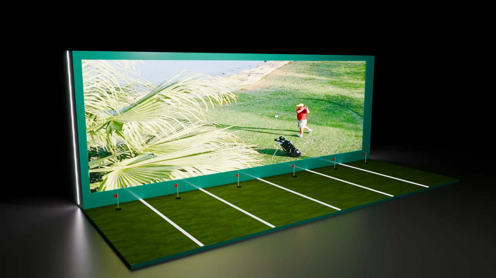

Year-based selection
One render separates a large landscape screen from a low angled console displaying years and a phone-sized golf image.
A landscape with a closer point of selection.
Explore the story
Connect year-based content with a large scenic display.
One arrangement separates a landscape screen from an angled console of years and a phone-sized image. Another brings the same elements together within a curved counter.
One render separates a large landscape screen from a low angled console displaying years and a phone-sized golf image.
A second concept brings the display and a row of year labels into a curved counter, with a human figure indicating scale.
The consistent teal enclosure connects the two spatial studies.
Explore the complete compositions and interface states. Select any image for a closer look.
04 / PROJECT IMAGES
Select a view to explore.
A compact control surface sits in front of a broad display, bringing historical content within easy reach.
An alternate display pairs a portrait-oriented surface with a small standing-height console.
Physical control concept: a golf-ball prop connects a small floor platform to a large screen. Supplied screen imagery remains part of the source composition.
Shared putting lanes: a wide screen and repeated floor markings turn the visual system into a group-scale installation concept.

Structure, interaction and visual decisions that give the work its character.
RoleConfirm scene assembly, materials, lighting, rendering, interface composition and any separately authored geometry.
AssetsEmbedded landscape and golf imagery, the phone representation and human figure need source credit. Imported or supplied geometry must be distinguished from original modeling.
StatusDraft visualization case study. Two original render outputs reviewed; interaction, fabrication and delivery unverified.